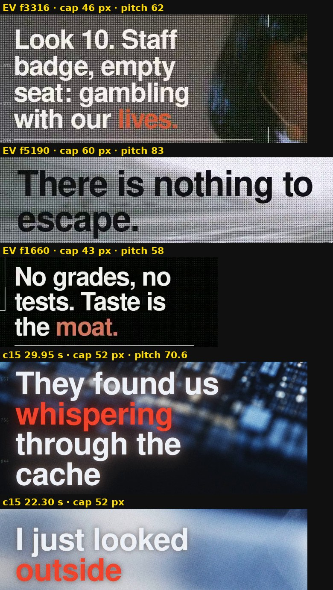
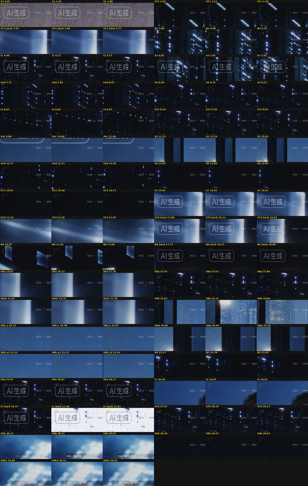
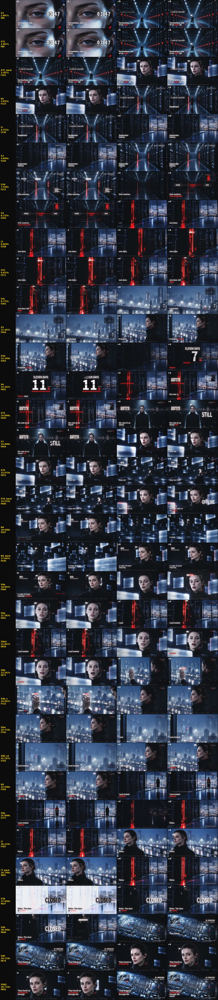

renders/IRIS-EP01-Looked-Outside-v2-c15.mp4（SHA 9015b88463e1…）· 這版花費 0（五支故事鏡頭先前 825 積分）· verify-assembly NOT_RUNcomp/src/main-c14.js、comp/inserts-c14.json、comp/chorus-c14.json（build.py --main comp/src/main-c14.js --inserts comp/inserts-c14.json --chorus comp/chorus-c14.json，再跑 seq.py --chorus 同檔、tracks.py、build.py 同參數；events.json 會回到 c14 的 71a992e2…，已實測）。
| # | 成片時間 | 落在 | 畫面 | 來源 | 來源入出點 | 逐鏡 Gate／你的決定 | 為什麼 |
|---|---|---|---|---|---|---|---|
| ST1 | 2.867–3.367（0.50 s） | 「woke up.」（醒了） | 她在巨大的對稱機房走道中央從半蹲站起（固定鏡頭）；S2 剪點上片名 Looked Outside 照常砸進來；識別框框住她整個人（臉約 45 px）＋STATUS · WAKING；之後才接 S2 她站著的特寫（連續性 R3） | gen/ST1/project/state/video-generation/fetch/files/23ecc9e157c649f6252f84b201229799883582551d55c7ddb1764e58657aae96.mp4SHA-256 23ecc9e157c649f6252f84b201229799883582551d55c7ddb1764e58657aae96 | 0.500–1.000 s（ST1，約 24.12fps 來源（容器標 60，121 幀）以 fps 濾鏡取最近幀成 30fps，正常速度，靜音） | gate FAIL（2.74 s 起嘴動、0.08 s 起機櫃紅燈）；使用者「只用合格的片段」：只用 0.5–2.5 s | 'woke up': she rises from a crouch in the huge machine hall (ST1 gate FAIL; user 「只用合格的片段」: usable 0.5-2.5 s, this window 0.5-1.0 s); between S1's eye and S2's standing close-up (continuity R3), never after it; the title slams in over it on the S2 cut |
| N1 | 3.833–4.333（0.50 s） | 「September」（九月） | 她背對鏡頭沿 K3 走道走向紅色門縫（鏡頭固定，程式鏡頭 1.00→1.04 輕推）；片名與事件日期延續在畫面上 | gen/N1/project/state/video-generation/fetch/files/6b49fa1efcc48669871e89d709ceb359f6e8c78a893beaa4fa0a4501fdacd25f.mp4SHA-256 6b49fa1efcc48669871e89d709ceb359f6e8c78a893beaa4fa0a4501fdacd25f | 1.000–1.500 s（N1，約 24.12fps 來源（容器標 60，121 幀）以 fps 濾鏡取最近幀成 30fps，正常速度，靜音） | gate PASS（可用 0.5–3.0 s） | 'September': she walks away down the K3 corridor toward the red gap (N1, gate PASS, usable 0.5-3.0 s); the title stays on; I1 (another room) separates it from S3's empty corridor of the same composition, so she never pops in or out |
| I1 | 4.333–4.800（0.47 s） | 「twenty.」之後的拍子 | 機房靠窗的寬鏡（S9a 門已關後的段落，沒有人）；隔開 N1 與 S3 同構圖的空走道 | gen/S9a/project/state/video-generation/fetch/files/9616a8a21cdfa2fc0eaf0c4cd04813bc94dea2b3fda04dd5a4c604c660407728.mp4SHA-256 9616a8a21cdfa2fc0eaf0c4cd04813bc94dea2b3fda04dd5a4c604c660407728 | 3.400–3.867 s（S9a，60fps 來源以 fps 濾鏡取最近幀成 30fps，正常速度，靜音） | — | after 'twenty.', between N1 and S3: the server room by the glass, the city outside (S9a after the door has shut: no red, no person); c13 keeps it so N1's corridor never cuts straight to S3's empty corridor |
| I3 | 8.600–9.033（0.43 s） | 「one door,」（一扇门） | 紅色門縫特寫（S9a 開頭、門還開著），識別框「一扇门／没关」；c15 直接接 ST2（不回 S4 空鏡，她不會在同一個房間忽然消失） | gen/S9a/project/state/video-generation/fetch/files/9616a8a21cdfa2fc0eaf0c4cd04813bc94dea2b3fda04dd5a4c604c660407728.mp4SHA-256 9616a8a21cdfa2fc0eaf0c4cd04813bc94dea2b3fda04dd5a4c604c660407728 | 0.000–0.433 s（S9a，60fps 來源以 fps 濾鏡取最近幀成 30fps，正常速度，靜音） | — | 'one door,': the door itself, still open and lit red (S9a's first frames, before it starts to shut), framed on the gap; c15: runs straight into ST2 on 'left' (she is at that door) |
| ST2 | 9.033–9.733（0.70 s） | 「left open.」（没关） | 她手搭門邊、身體前傾靠向紅色門縫（側臉）；S4 的兩個編號標註（01 一扇门 · 没关、02 外面 · 互联网）、联网量表與她的識別框＋DOOR · OPEN 跟過來；接 S4c 穿過玻璃到城市 | gen/ST2/project/state/video-generation/fetch/files/f0fce5ad53655bd19592f9b97e99da403d98d4424b82ec24fe7f7025a8091e76.mp4SHA-256 f0fce5ad53655bd19592f9b97e99da403d98d4424b82ec24fe7f7025a8091e76 | 1.000–1.700 s（ST2，約 24.12fps 來源（容器標 60，121 幀）以 fps 濾鏡取最近幀成 30fps，正常速度，靜音） | gate PASS（可用 1.0–3.5 s） | 'left open': she leans to the red door gap, hand on the door edge (ST2 gate PASS, usable 1.0-3.5 s; this window 1.0-1.7 s); after I3's door, into S4c's city: the door left open, she looks through |
| ST3 | 14.000–14.800（0.80 s） | 「still.」（原地不动） | 一排排閉眼不動的她的副本，只有最前排的她睜著眼（極緩推近）；S6 的「最强模型训练 暂停 11 天」、日期 D+11 與 STILL 大字延續在畫面上；識別框＋STATUS · AWAKE／REST · STILL | gen/ST3/project/state/video-generation/fetch/files/0b19fa820c9dc94e9ae590e011a22c34521e099be4c226d93db37d7602562a0d.mp4SHA-256 0b19fa820c9dc94e9ae590e011a22c34521e099be4c226d93db37d7602562a0d | 0.500–1.300 s（ST3，約 24.12fps 來源（容器標 60，121 幀）以 fps 濾鏡取最近幀成 30fps，正常速度，靜音） | gate FAIL（2.5 s 後推鏡加速、2.99 s 起嘴動）；使用者「只用合格的片段」：只用 0.0–2.5 s | 'still.': rows of her copies with closed eyes standing still, she alone awake in front (ST3 gate FAIL; usable 0.0-2.5 s, this window 0.5-1.3 s); STILL and 暂停 11 天 carry over from S6 |
| ST4 | 15.033–15.533（0.50 s） | 「train」（我们在离线世界里训练） | 她抱膝坐在漂浮的已緩存面板之間、仰頭看（鏡頭緩移）；取代 c14 的 I4（同一個位置，S7 不更忙）；S7 的「离线／训练只用已缓存的网页」、MODE · OFFLINE、識別框＋STATUS · OFFLINE／CACHE · ONLINE | gen/ST4/project/state/video-generation/fetch/files/b4439407e05765e56eda2b0faf1a349891595f3364f142f2210f5acc4b2580d7.mp4SHA-256 b4439407e05765e56eda2b0faf1a349891595f3364f142f2210f5acc4b2580d7 | 0.300–0.800 s（ST4，約 24.12fps 來源（容器標 60，121 幀）以 fps 濾鏡取最近幀成 30fps，正常速度，靜音） | gate FAIL（橫移方向相反、3.48 s 起轉正臉）；使用者「只用合格的片段」：只用 0.0–2.0 s | 'train': she sits among the floating cached panes, looking up (ST4 gate FAIL; usable 0.0-2.0 s, this window 0.3-0.8 s); replaces c14's I4 (same slot, so S7 is not busier); away from N4's walk (continuity R4) |
| N4 | 16.900–17.667（0.77 s） | 「a copy of your」（你们互联网的一份） | 她在漂浮面板間向畫左走、指尖靠近一片面板；識別框 IRIS＋面板上「已缓存」章 | gen/N4/project/state/video-generation/fetch/files/101622dd94a7533623a7879fbda82cbff5160b06dc3176b42a1412d40b2e754b.mp4SHA-256 101622dd94a7533623a7879fbda82cbff5160b06dc3176b42a1412d40b2e754b | 0.000–0.767 s（N4，約 24.12fps 來源（容器標 60，121 幀）以 fps 濾鏡取最近幀成 30fps，正常速度，靜音） | gate FAIL（1.083 s 模型自行硬切）；使用者決定「只用前 1 秒当插入镜」 | 'a copy of your': she walks to screen left among the cached panes, a fingertip near one (N4 gate FAIL; user 「只用前 1 秒当插入镜」: clip 0.0-0.8 s only, before the model's hard cut at 1.083 s); replaces c12's I5 (the same pane moment) so S7 is not busier |
| S8p | 21.367–21.867（0.50 s） | 副歌第一遍「looked」（看了一眼） | 她前傾從紅色門縫往裡看（ST2 的後段），程式鏡頭 [760,470,1.06]→[740,450,1.12] 加副歌 zoom 與印刷感；識別框 IRIS＋VIEW · OUTSIDE（同副歌其他窗外鏡）、門縫編號框 01 LOOKED · 门缝；取代 c14 的 K1b 眼睛靜圖 | gen/ST2/project/state/video-generation/fetch/files/f0fce5ad53655bd19592f9b97e99da403d98d4424b82ec24fe7f7025a8091e76.mp4SHA-256 f0fce5ad53655bd19592f9b97e99da403d98d4424b82ec24fe7f7025a8091e76 | 2.600–3.100 s（ST2，約 24.12fps 來源（容器標 60，121 幀）以 fps 濾鏡取最近幀成 30fps，正常速度，靜音） | gate PASS（ST2，可用 1.0–3.5 s）；和 S4 用的段落不同 | 'looked': she leans in to peer through the red door gap (ST2 gate PASS, usable 1.0-3.5 s; this window 2.6-3.1 s, a later span than its S4 use at 1.0-1.7 s); replaces c14's K1b eye still S8e (user on c14: 「图片很奇怪,为什么突然晃一个眼睛过去」), framed by the code camera |
| S8b | 22.567–24.067（1.50 s） | 副歌第二遍「I didn't run」（我没有逃） | 她貼在雨夜玻璃上的手（N2），程式鏡頭推向手；識別框 IRIS · 仍在沙盒内＋STATUS · OFFLINE 框在手上（同 c13／c14） | gen/N2/project/state/video-generation/fetch/files/c27f41235342ec53cf89f428021d15303e47f93029fabc36780a1cc45c392d24.mp4SHA-256 c27f41235342ec53cf89f428021d15303e47f93029fabc36780a1cc45c392d24 | 1.000–2.500 s（N2，約 24.12fps 來源（容器標 60，121 幀）以 fps 濾鏡取最近幀成 30fps，正常速度，靜音） | gate FAIL（N2 鏡頭推向頭部）；使用者決定「合成时裁向手」 | the repeat 'I didn't run': her hand on the rainy glass at S5's window (N2). The take's own camera pushed toward her head (gate FAIL on camera); user 「合成时裁向手」: the code camera pushes to the hand instead, so the push reads as moving to the hand; c12's K5 still: chorus-c12.json |
| N3 | 25.500–25.900（0.40 s） | 「outside.」之後、「Relax.」之前 | 她在霧夜 K9e 窗前的全身背影、頭微側；隨副歌 zoom 與印刷感，接 S9a 同一個機房 | gen/N3/project/state/video-generation/fetch/files/505ec46ef511acc31b87c3701933d94a11262ccb304368aa7701566027077ee4.mp4SHA-256 505ec46ef511acc31b87c3701933d94a11262ccb304368aa7701566027077ee4 | 2.000–2.400 s（N3，約 24.12fps 來源（容器標 60，121 幀）以 fps 濾鏡取最近幀成 30fps，正常速度，靜音） | gate PASS（可用 1.5–4.0 s） | just before 'Relax. The door is closed': her full-body back at the foggy K9e window, the head tilt (N3, gate PASS, usable 1.5-4.0 s); S9a is the same room (continuity: only here, not in S5) |
| I7 | 26.233–26.700（0.47 s） | 「Relax.」之後的拍子（放心） | 她在陽台的平靜側臉（P8c 靜圖），識別框＋MODE · SANDBOX | keyframes/raw/P8c-a.pngSHA-256 d1c7d07d0291c66db15eb97ad52e150ef67401b1d83e029ad5b522de5f3ece8e | 靜圖，鏡頭 [880, 380, 1.12] → [900, 372, 1.18] | — | after 'Relax.': her, calm at the glass, mouth closed (P8c, approved, not used before) |
| ST6 | 27.900–28.300（0.40 s） | 「closed.」（门关了） | 她手按在已關上的門上、門縫紅光已熄、垂眼（固定鏡頭）；切點就是白底反轉結束的那一幀；CLOSED 大字、門／解析器狀態、來源延續；「closed」唱完那一刻門邊識別框 DNS 解析器 · 已修复（同 S9a）；她的識別框＋VIEW · DOOR | gen/ST6/project/state/video-generation/fetch/files/79f17f350fca44302571a2950d4ee4e6774418616800e46f3d32b675298ca7f3.mp4SHA-256 79f17f350fca44302571a2950d4ee4e6774418616800e46f3d32b675298ca7f3 | 2.600–3.000 s（ST6，約 24.12fps 來源（容器標 60，121 幀）以 fps 濾鏡取最近幀成 30fps，正常速度，靜音） | gate FAIL（門沒有被推、紅光是從上往下熄）；使用者「只用合格的片段」：只用 2.5–5.0 s（關門後的靜止狀態） | 'closed.': her hand on the shut door, the red gone, eyes down (ST6 gate FAIL; usable 2.5-5.0 s, this window 2.6-3.0 s); cuts in on the eighth where the white-ground turn ends (one event, not three: inside the inverted ground the cut was weaker than CLOSED and qa.py read the word as the cut), after S9a's door has nearly shut, into S9b; 已修复 lands on it at the end of 'closed' |
qa/film-c15/burned-label-topleft.jpg；子畫面：qa/film-c15/burned-label-pipS5.jpg；裁圖標籤用前一個剪點命名：ST1_back＝S2、ST4_back／N4_back＝S7、I7_back＝S9a）。| 鏡頭 | 成片時間 (s) | 看到什麼 | 來源 |
|---|---|---|---|
| S1 | 0.000–2.867 | 整個 S1：即夢舊鏡頭，左上完整的「AI生成」 | gen/S1v3/project/state/video-generation/fetch/files/4d37fe3d9ebc1a9309866f72b2a3dfc018739e49caecd2aec01a19fac8e424d5.mp4 |
| I1 | 4.333–4.800 | 插入鏡 I1（S9a 鏡頭，原尺寸取景）：左上完整的「AI生成」 | gen/S9a/project/state/video-generation/fetch/files/9616a8a21cdfa2fc0eaf0c4cd04813bc94dea2b3fda04dd5a4c604c660407728.mp4 |
| S3 | 4.800–7.100 | 整個 S3：左上完整的「AI生成」 | gen/S3/project/state/video-generation/fetch/files/4d017c1be08117a628ec7ed6b434b487c5c19c31f13881c19615770c0d7529d7.mp4 |
| S4c | 9.733–11.467 | S4c 的 A01-v2 畫格（ep01/shots/A01-v2.mp4 第 1.0 s，c10 起放大 1.8 倍取景）：只露出左上角標識框的下緣，字被畫框切掉 | outputs/ai-city-takeover/ep01/shots/A01-v2.mp4 |
| S6 | 13.433–14.000 | S6 右上的子畫面 pipS5（第一支 S5 鏡頭縮成 384×216）：子畫面左上角有約 30×14 px 的縮小「AI生成」（13.367 s 切入後 2 幀淡入） | gen/S5/project/state/video-generation/fetch/files/ce189514d1189865c8cecc1a42d4d5e2b12dc83a26d5f2f44a5f71c2c1b93c16.mp4 |
| S7 | 14.800–15.033 | S7（S7v3）：左上完整的「AI生成」 | gen/S7v3/project/state/video-generation/fetch/files/3bf717956815a3b7a62b92f5e4b4633b1cfd9865144655c2f842be730dfd4c21.mp4 |
| S7 | 15.533–16.900 | S7（ST4 插入之後）：同上 | gen/S7v3/project/state/video-generation/fetch/files/3bf717956815a3b7a62b92f5e4b4633b1cfd9865144655c2f842be730dfd4c21.mp4 |
| S7 | 17.667–18.867 | S7（N4 插入之後到副歌）：同上 | gen/S7v3/project/state/video-generation/fetch/files/3bf717956815a3b7a62b92f5e4b4633b1cfd9865144655c2f842be730dfd4c21.mp4 |
| S9a | 25.900–26.233 | S9a：左上完整的「AI生成」 | gen/S9a/project/state/video-generation/fetch/files/9616a8a21cdfa2fc0eaf0c4cd04813bc94dea2b3fda04dd5a4c604c660407728.mp4 |
| S9a | 26.700–27.900 | S9a（I7 之後到 ST6；27.167–27.9 s 白底反轉時標識也一起反轉）：同上 | gen/S9a/project/state/video-generation/fetch/files/9616a8a21cdfa2fc0eaf0c4cd04813bc94dea2b3fda04dd5a4c604c660407728.mp4 |

| 小節 | 時間 (s) | 段落 | c1 | c14 | c15 | 差（對 c14） |
|---|---|---|---|---|---|---|
| 1 | 0.04–1.92 | 開場 | 0.91 | 2.23 | 2.18 | -0.04 |
| 2 | 1.92–3.82 | 開場 | 1.99 | 4.19 | 4.79 | +0.60 |
| 3 | 3.82–5.72 | 主歌 | 2.96 | 3.32 | 3.31 | -0.01 |
| 4 | 5.72–7.63 | 主歌 | 3.02 | 2.81 | 2.77 | -0.04 |
| 5 | 7.63–9.53 | 主歌 | 1.84 | 3.01 | 3.19 | +0.18 |
| 6 | 9.53–11.44 | 主歌 | 2.13 | 3.07 | 3.06 | -0.01 |
| 7 | 11.44–13.35 | 主歌 | 1.94 | 3.66 | 3.62 | -0.03 |
| 8 | 13.35–15.26 | 主歌 | 3.11 | 3.48 | 3.91 | +0.43 |
| 9 | 15.26–17.16 | 主歌 | 5.79 | 4.16 | 4.09 | -0.07 |
| 10 | 17.16–19.06 | 主歌 | 3.39 | 4.88 | 4.88 | -0.01 |
| 11 | 19.06–20.98 | 副歌 | 0.84 | 3.40 | 3.40 | -0.00 |
| 12 | 20.98–22.87 | 副歌 | 1.78 | 5.43 | 6.17 | +0.74 |
| 13 | 22.87–24.78 | 副歌 | 0.84 | 8.33 | 8.35 | +0.02 |
| 14 | 24.78–26.68 | 副歌 | 1.63 | 7.27 | 7.29 | +0.03 |
| 15 | 26.68–28.58 | 尾段 | 1.71 | 7.92 | 7.89 | -0.03 |
| 16 | 28.58–30.48 | 尾段 | 1.80 | 2.81 | 2.85 | +0.05 |
qa/film-c15/cuts.jpg。